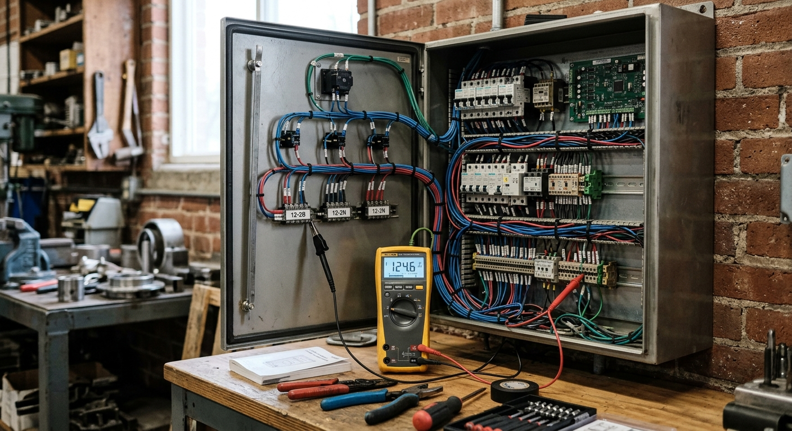

Electrical Troubleshooting
I provide expert electrical troubleshooting services for both industrial facilities and homes, ensuring systems operate safely, efficiently, and without interruption. Combining root-cause analysis with advanced diagnostic tools, I resolve complex electrical failures.
From pinpointing intermittent short circuits to restoring critical motor control functions, my priority is minimal downtime and maximal safety through field-tested technical precision.

Core Expertise
- Fault Diagnosis & Isolation - Systematic testing of circuits to identify leakage, insulation breakdown, neutral faults, or open circuits in industrial and residential grids.
- Control Circuit Troubleshooting - Rapid repair of magnetic contactors, relays, timers, sensors, and PLC signal path issues within electrical panels.
- Motor & Load Failure Analysis - Diagnosing winding heat-ups, phase loss in 3-phase motors, capacitor failure in single-phase systems, and bearing-induced electrical strain.
- Emergency Trip Resolution - Analyzing and fixing frequent MCB/RCCB tripping, fuse blow-outs, and identifying hazardous hot spots in distribution boards.
Key Features of My Services
- Systematic Investigation: Use of the "Symptom → Diagnosis → Repair → Verification" methodology for accurate, lasting fixes.
- Safety First: Adherence to strict lockout/tagout (LOTO) protocols and insulation testing before system re-energization.
- Industrial Efficiency: Expertise in reducing production downtime by quickly bypassing faulty components while maintaining safety limits.
- Modern Tooling: Utilizing digital multimeters, clamp meters, and insulation testers to provide data-backed troubleshooting.
- Preventive Advice: Every repair comes with a recommendation report to prevent similar electrical failures in the future.
Why Choose My Troubleshooting Services?
- Hands-on field experience as a Sub-Assistant Engineer in high-stakes industrial environments.
- Proven ability to read and trace complex SLDs and wiring diagrams under pressure.
- Thorough understanding of electrical machine behavior, motor control, and generator ATS logic.
- Calm and analytical approach to identifying hazardous electrical conditions.
- Focus on quality repairs rather than temporary "patch" fixes.
My Troubleshooting Approach
Analyze Symptoms → Perform Tests → Identify Root Cause → Permanent Repair → Operational Check
Electrical faults can be dangerous and costly. My approach ensures your systems are restored to full health with speed and professional safety compliance.
Restoring safety and continuity to your electrical systems through expert diagnostics.